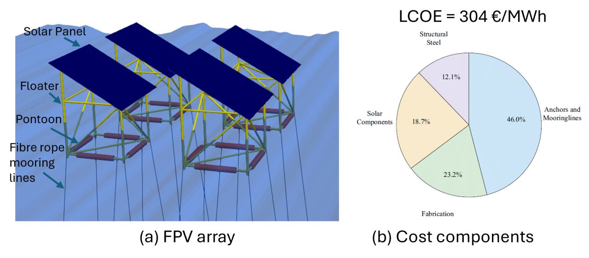

A floating photovoltaic system design for offshore deployment

Abstract
This project presents a novel conceptual design for a floating photovoltaic (FPV) system capable of operating in harsh offshore environments. The system consists of multiple FPV modules, supported by tubular steel structures to elevate the panels over the water surface and prevent wave overtopping. Station keeping is achieved through a taut mooring system with suction anchors. Fiber ropes and shared anchors are used to reduce mooring costs. Distributed pontoons provide reserve buoyancy to maintain pretension in the mooring lines and prevent slack under extreme environmental conditions. The annual energy production and life-cycle economic feasibility of a large-scale deployment of FPV in regions with high solar resources are analyzed. Numerical simulations are performed using SIMA to evaluate the hydrodynamic response and mooring performance of the FPV module under a selected ultimate limit state representative of the selected deployment site. The results reveal that offshore FPV installations are structurally feasible in exposed seas but offer limited profitability, which is primarily constrained by the high expenses associated with mooring systems.
Read the published article ↗